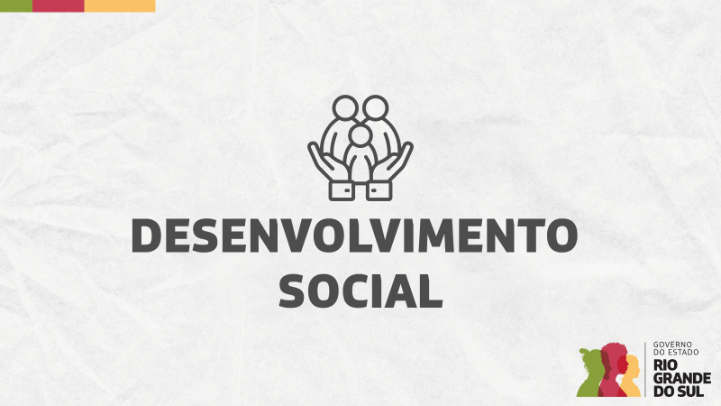
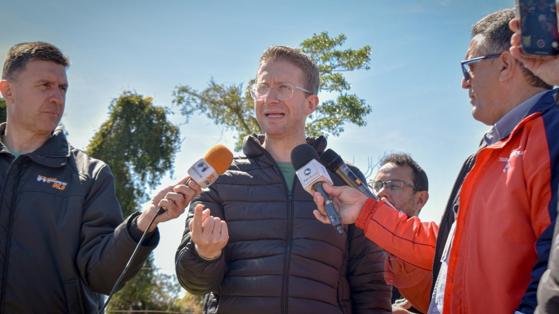
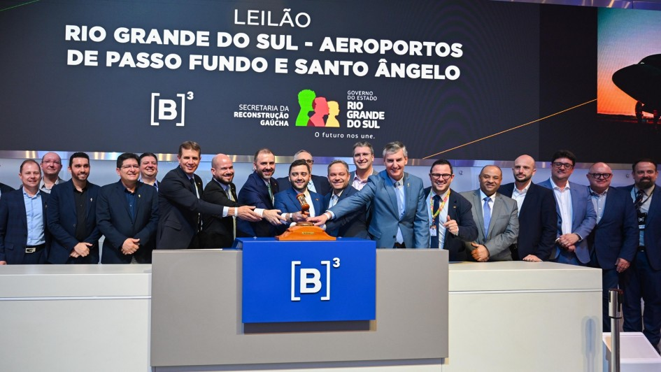

Inicio
Noticias
Emendas
Biografia
fonte: rs.gov.br
Governador Eduardo Leite inaugura setor de hemodiálise na Santa Casa de Santa Vitória do Palmar
fonte: rs.gov.br
Grupo de Ações Especiais da Polícia Penal apresenta novos uniformes operacionais
fonte: rs.gov.br
Leite valoriza encontro da Comunitas como espaço para debater o futuro do Brasil

fonte: rs.gov.br
Governo do Estado investe R$ 20 milhões em projetos voltados às políticas públicas para pessoas idosas

fonte: rs.gov.br
Estado e município dão início a obra de Centro Dia para Pessoa Idosa em Restinga Sêca

fonte: rs.gov.br
Leilão garante investimento de R$ 102 milhões em melhorias nos aeroportos de Passo Fundo e Santo Ângelo